党的思想引领力，是指不断推进理论创新，用党的创新理论武装头脑、统一思想、指导实践、推进工作、抵御错误思潮干扰的能力。关于增强党的思想引领力的必要性，下列认识正确的是（ ）。
①干事创业，思想为先。增强党的思想引领力是推进强国建设、民族复兴伟业的需要，是战胜一切风险挑战的可靠保证
②增强党的思想引领力是马克思主义政党的优良传统。历史表明，弱化党的思想引领力，就会造成思想上的混乱，危害国家安全稳定
③思想引领是一个从思想认同、自觉践行再到实践转化的过程。党的思想只有被人民群众理解，才能成为推动社会变革的力量
④思想是隶属于精神层面的社会意识形态，决定着特定的社会经济形态。发展经济，必须首先要增强党的思想引领力
A.①②③ B.①②④ C.①③④ D.②③④
党的二十大报告指出，全面建成社会主义现代化强国，总的战略安排是分两步走。关于到二〇三五年我国发展的总体目标，下列表述正确的有（ ）。
①经济实力、科技实力、综合国力大幅跃升，人均国内生产总值迈上新的大台阶，达到中等发达国家水平
②实现高水平科技自立自强，力争进入创新型国家行列
③建成现代化经济体系，形成新发展格局，基本实现新型工业化、信息化、城镇化、农业现代化
④广泛形成绿色生产生活方式，基本实现“碳中和”目标，生态环境根本好转，美丽中国目标全面实现
⑤把我国建设成为综合国力和国际影响力领先的社会主义现代化强国
A.1项 B.2项 C.3项 D.4项
习近平总书记在庆祝中国共产党成立105周年大会上的重要讲话，坚定发出在全面建设社会主义现代化国家新征程上（ ）的伟大号召。
①大力弘扬伟大建党精神
②始终牢记初心使命
③坚定信心接续奋斗
④奋力创造新的历史辉煌
A.1项 B.2项 C.3项 D.4项
2026年7月9日，国务院发布《“十五五”碳达峰行动方案》。根据《行动方案》，下列说法正确的有（ ）。
①大力推进非化石能源开发，扩大非化石能源有效供给
②推动新型储能规模化发展，大力发展长时储能
③优先保障民生用气，合理引导重点行业企业用气
④建设“三北”核电、西南水风光一体化、沿海风电光伏、海上风电等清洁能源基地
⑤“十五五”时期是实现碳达峰的关键期、攻坚期
A.①②③⑤ B.①③④⑤ C.①②④⑤ D.②③④⑤
2026年1月12日，习近平总书记在二十届中央纪委五次全会上发表重要讲话。下列说法正确的有（ ）。
①贯彻落实党中央重大决策部署，是维护党中央权威和集中统一领导的根本要求，也是党和人民事业不断发展进步的重要历史经验
②党的自我革命重在治权，把权力关进制度笼子是新时代全面从严治党的一项重要任务
③腐败是党和国家事业发展进程中的拦路虎、绊脚石，反腐败是一场输不起也决不能输的重大斗争
④政协机关在推进党的自我革命、全面从严治党中责任重大、使命光荣，要坚定维护党的团结统一，坚定捍卫党的先进性纯洁性
A.1项 B.2项 C.3项 D.4项
中共中央政治局就前瞻布局和发展未来产业进行第二十四次集体学习。关于未来产业，下列说法错误的是（ ）。
A.未来产业发展涉及面广，必须健全治理体系。要统筹发展和安全，探索科学有效的监管方式，防范相关风险，确保既“放得活”又“管得好”
B.很多未来产业的兴起是靠企业一步步突破带动的。要发挥企业主体作用，推动各类创新资源向企业集聚
C.未来产业培育周期长、市场风险大，政策上要支持，政府要做好服务
D.要充分发挥新型举国体制优势，坚持“企业出题、科技答题”，加大重点领域关键核心技术攻关力度
物质范畴是一切唯物主义哲学的理论基石。马克思主义的物质范畴是一个高度抽象的哲学概念，是对世界上客观存在的各种事物共同本质的概括。关于马克思主义的物质范畴，下列选项正确的有（ ）。
①物质的根本属性是运动
②世界的本原是多种物质的集合
③物质是标志客观实在的哲学范畴
④人口因素构成了人类社会存在的基础
A.1项 B.2项 C.3项 D.4项
贸易战虽然会产生一定的负面影响，但我国经济韧性好，潜力足，回旋空间大，可以把压力转化为倒逼转型升级的动力，关键是要保持战略定力，贯彻新发展理念。这主要体现的马克思主义原理是（ ）。
A.内因和外因的辩证关系原理
B.量变和质变的辩证关系原理
C.事物的普遍联系原理
D.矛盾的普遍性和特殊性的辩证原理
习近平新时代中国特色社会主义思想是马克思主义中国化最新成果。下列关于习近平新时代中国特色社会主义思想的政治论断，叙述有误的是（ ）。
A.中国特色社会主义最本质的特征是中国共产党领导
B.全面深化改革总目标是实现社会主义现代化和中华民族伟大复兴
C.新时代我国社会主要矛盾是人民日益增长的美好生活需要和不平衡不充分发展之间的矛盾
D.全面推进依法治国总目标是建设中国特色社会主义法治体系，建设社会主义法治国家
构建新发展格局是把握未来发展主动权的战略性布局和先手棋，以下关于构建新发展格局的表示不正确的是（ ）。
A.国内国际双循环不是封闭的国内单循环
B.必须增强我国在全球产业供应链创新链中的影响力
C.国内大循环要求各地实现小而全的自我小循环
D.国内大循环需要加快培育完整内需体系
根据《中华人民共和国民法典》的规定，以下人员具备完全民事行为能力的是（ ）。
A.王某，年龄 16 周岁，网店店主，以自己的劳动收入为全部生活来源
B.张某，年龄 9 周岁，小学生，已参演广告片，获酬 10 万元
C.李某，年龄 28 周岁，无业人员，不能完全辨认自己的行为
D.赵某，年龄 17 周岁，在校学生，完全依靠父母供养
行政机关所实施的下列行为，不属于具体行政行为的是（ ）。
A.丁某骑电动车误闯红灯，交警当场罚款 30 元
B.某省人民政府制定《某省电动自行车管理暂行办法》
C.个体工商户吴某被王某勒索财物，报警后警察未予处理
D.某县政府与叶某达成房屋征收补偿协议后来按照约定履行补偿协议
下列选项中的表示属于要约的是（ ）。
A.甲给乙发微信称愿以友情价将自己的电脑转让给乙，有意可于 7 日内交付
B.甲对乙说：“我正考虑卖掉家中祖传的一套家具。”
C.甲公司在某媒体上发布招股说明书
D.甲在某媒体上做广告，以特定价格出售一台电脑，广告中注明：“本广告所载商品售予最先支付现金的人。”
司马迁在《史记·货殖列传》中写道：“人各任其能，竭其力，以得所欲；故物贱之征贵，贵之征贱。”体现了经济学中的（ ）。
A.价值规律 B.需求定理
C.货币流通规律 D.供求法则
下列关于明朝的说法中正确的是（ ）。
A.明朝的开国皇帝是朱元璋，其将都城定于北京
B.我国省级行政区的设立最早始于明朝
C.《本草纲目》《农政全书》《天工开物》的作者都是明朝人
D.明朝初年强化君主专制的措施是采用三省六部制
下列诗句所描写的传统节日，按时间先后排序正确的是（ ）。
①今夜月明人尽望，不知秋思落谁家
②千门万户曈曈日，总把新桃换旧符
③遥知兄弟登高处，遍插茱萸少一人
④屈子冤魂终古在，楚乡遗俗留至今
A.②④③① B.④③①② C.②④①③ D.④②③①
关于气候，下列表述不正确的是（ ）。
A.海洋性气候气温温差小、湿度大，降水日数多且强度小
B.大陆性气候气温年较差或气温日较差很大
C.地中海气候夏季炎热干燥，冬季温和多雨
D.热带季风气候没有明显的旱雨两季
下列生活现象中，与地球公转有关的是（ ）。
A.爸爸凌晨直播观看远在美国留学的儿子的毕业典礼
B.学校夏天放学时间比冬天要晚一些
C.日月星辰东升西落
D.拔掉注满水的浴缸下面的塞子，水的漩涡是按照特定的方向旋转
下列生活现象用分子的相关知识，解释不正确的是（ ）。
A.酒精溶于水表明分子间有空隙
B.充足的自行车内胆在烈日下爆裂，表明分子的体积随温度升高而增大
C.葡萄酿成酒后，分子的种类发生了变化
D.湿衣服晾干表明分子在不断的运动
下列关于战争题材的诗文与战役对应不正确的是（ ）。
A.万骑临江貔虎噪，千艘列炬鱼龙怒——长平之战
B.力拔山兮气盖世。时不利兮骓不逝——垓下之战
C.东渡黄河第一战，威扫敌倭青史流——平型关战役
D.昆阳之战，屠百万于斯须，旷千古而一快——昆阳之战
衰老是一个全面的过程，多器官功能相继衰退，老年人往往有多种疾病同时存在。所以给老年人看病必须更加注重系统分析，分清主次，解决主要矛盾。如果按一个一个病分科诊治，必然________，甚至互相冲突，带来严重后果。
填入画横线部分最恰当的一项是：
A.坐失良机 B.收效甚微
C.无力回天 D.顾此失彼
如今，从日常的互联网交易到国家机密，都受到各种加密方法的保护，这些方法看似安全，但随时可能失效。为了创建一个真正安全且永久的加密方法，就需要一个足够困难的计算问题，来为对手设置一个________的障碍。
填入画横线部分最恰当的一项是：
A.高不可攀 B.固若金汤
C.颠扑不破 D.不可逾越
不让“同款”为山寨货遮羞，平台________。大数据时代，任何人均能通过“同款”“仿品”等关键词，轻易找到造假售假的商家，平台坐拥先进的后台系统、人力技术优势，自能对平台内经营者侵犯知识产权行为________。
填入画横线部分最恰当的一项是：
A.责无旁贷 洞若观火 B.当仁不让 义不容辞
C.烂熟于心 如数家珍 D.难辞其咎 了如指掌
不同代际的作家深入新鲜繁茂的生活，在起伏奔涌的时代浪潮中，________各自不同的人生经验，从中华优秀传统文化中汲取美学滋养，在脚踏实地的文学实践中思索和理解文学与时代的关系、写作与现实的关系，不断地________自我的局限，获得持续的写作资源和创作动力，探索新锐的文学表达形式，创作出与人民共情的佳作。
填入画横线部分最恰当的一项是：
A.发掘 摆脱 B.梳理 克服
C.焕发 超越 D.激活 突破
民主与自由是全球治理的目标归旨。由于意识形态的差别，全球治理领域常以意识形态作为标准划分敌我阵营，并________，部分学者和政客更是极力鼓吹文明冲突论、历史终结论，严重影响世界秩序的安定稳定。中国主张________成见，尽可能寻找各国价值的最大共通点，致力于寻求国与国的最大公约数，扩大国与国利益的最大汇合处。
填入画横线部分最恰当的一项是：
A.分庭抗礼 去除 B.针锋相对 抛弃
C.水火不容 破除 D.各抒己见 摒弃
腐败是危害党的生命力和战斗力的最大毒瘤，反腐败是最彻底的自我革命。坚持不敢腐、不能腐、不想腐一体推进，体现了我们党在推进反腐败斗争上________的系统思维，既强调惩罚的惩治和震慑作用、制度的约束作用，又强调思想教育从源头上消除贪腐的作用。三者既各有________，又同时发力、同向发力、综合发力。
填入画横线部分最恰当的一项是：
A.正本清源 指向 B.标本兼治 侧重
C.齐头并进 特点 D.双管齐下 优势
深入研究国外马克思主义哲学的关键是必须坚持正确的理论基点。避免对国外马克思主义哲学的囫囵吞枣式的转述和评说，克服在研究方法与内容上________和停留表面的不足。进一步的研究需要运用正确的判断标准，对国外理论热点的是非曲直做出________的评价。
填入画横线部分最恰当的一项是：
A.不求甚解 高屋建瓴 B.大而无当 不偏不倚
C.大而化之 恰如其分 D.避重就轻 针砭时弊
如同人体的新陈代谢，自我更新是城市________的主题，是城市保持活力的源泉。在城市发展模式发生深刻变革的当下，老建筑改造必须更好________时代风貌、回应时代命题。从保留工业遗产到丰富基础设施，从丰富消费场景到导入创新产业，让更多老建筑在改造、修缮和利用中延续生命、重焕生机，就能为城市发展________不竭动能。
填入画横线部分最恰当的一项是：
A.永恒 展现 注入 B.共通 反映 提供
C.恒久 折射 释放 D.基本 描绘 汇聚
在漫长的文学旅程里，陆续涌现过许多________的经典作品，而海明威创作的《白象似的群山》以其精湛的对话、富有意味的象征、________的暗示等艺术手法，在小说发展史中留下了浓墨重彩的一笔。篇幅虽短，却________地展示了海明威那独特的叙事风格，即极富象征意义的地理环境描绘和含蓄而戏剧性的情节描写。
填入画横线部分最恰当的一项是：
A.流芳百世 无出其右 不遗余力
B.脍炙人口 登峰造极 酣畅淋漓
C.喜闻乐见 别具一格 入木三分
D.妇孺皆知 无懈可击 面面俱到
能否善待他国，不仅是衡量一个国家和民族文化与文明的标尺，还是一个国家文化和文明能否________的决定性条件之一。历览人类历史文明的兴衰更替，可以清楚地看到，一种文明在兴起之后，若对其他文化和文明平等相待，并积极学习借鉴，这种文化和文明往往会不断________；若企图侵蚀甚至用强力铲除其他国家和民族的文化和文明，则必然会使自己的文化和文明异化，并逐步走向衰落直至最终________。
填入画横线部分最恰当的一项是：
A.生生不息 取长补短 凋敝
B.源远流长 博采众长 绝迹
C.长盛不衰 发扬光大 毁灭
D.绵延不绝 革故鼎新 消亡
由于月壤一直受到太阳的辐射，太阳的物质以太阳风的形式被注入到月壤颗粒中得以保存。因此，从月壤颗粒可以提取、并分析太阳的样品。完整的月壤剖面，记录了长达 30 多亿年的太阳辐射历史和注入的太阳物质。月球自形成以来，一直在不断远离地球。除了太阳风之外，月球还一直被地球风吹拂着，特别是在更早的 30 多亿年前。因此，月球正面的月壤还注入了来自古老地球的大气物质。科学家提出，通过比较月球正面和背面的月壤，可以识别出来自地球大气的成分，研究 30 多亿年前地球大气的组成和地球磁场。
这段文字意在说明：
A.月壤研究有助于探索太阳及地球的“秘密”
B.月球正面和背面月壤的物质成分有明显差异
C.月壤的构成成分与太阳风、地球风息息相关
D.研究地球大气可以从月球土壤物质构成入手
人工智能对就业的影响较为复杂。经济学家一般认为，因技术进步导致的失业是暂时的，不存在持续的“技术性失业”，因为技术进步所创造的就业机会要多于其所摧毁的就业机会：技术进步能够增加对新的技术产品的需求，新产品生产的扩大带来的就业最终会抵消因机器替代造成的失业。不过，这一理论推导需要两个前提：一是技术进步形成的产品需富有弹性，产品价格下降会大幅增加人们的需求；二是技术进步需要与社会制度、企业组织的变革同步发展。短期内这两个前提很难同时具备，在长期则可以努力实现，这需要通过完善社会制度来避免企业无节制地替代人力、忽视社会责任的行为，以促进就业的增长。
这段文字意在强调：
A.当代“技术性失业”注定是不可避免的
B.人工智能对就业会产生比较复杂的影响
C.人工智能会导致相悖的就业和失业效应
D.可通过完善社会制度减少“技术性失业”
勤劳智慧的中华民族很早就发现了甲烷的存在。我国西周时期成书的《易经》在谈到自然界发生的有关甲烷的现象时说：“象曰：泽中有火。”这里的“泽”就是沼泽。而“火井”则是我国古代的人们给天然气井的形象命名。不过由于技术与认识的局限，古代的中国人并没有将甲烷与天然气区分开来进行单独研究。直到 18 世纪，欧洲的科学家们才对甲烷进行了科学的研究。1790 年，英国医生奥斯汀研究发现，甲烷燃烧生成水和二氧化碳，从而确定甲烷是碳和氢的化合物。在随后的漫长岁月里，通过一代代化学家的不懈努力，人类对甲烷的认识逐渐清晰。
根据这段文字，以下说法正确的是：
A.天然气是碳和氢的化合物
B.沼泽中有甲烷，能起火燃烧
C.18 世纪前欧洲人还未了解甲烷性质
D.古代中国人认为甲烷和天然气没有区别
在社会文化的变革中，如果要创新，就必须要有新的思维，必须突破原有的观念体系和知识框架，必须要对社会已经蔓延的“常识”进行反思和批判。这里的“常识”，指既定的思想框架和方法路径。尽管这种思想框架和方法路径可能是人类智慧和实践的一种积累，但是随着历史的发展，它很可能又变成了一种枷锁，限制和捆绑着人们的创造力。我们的反思、修正、突破和创新，都需要不断地去做各种各样的尝试。
这段文字意在强调：
A.“常识”容易让人墨守成规 B.要创新就必须突破“常识”
C.突破和创新需要大胆尝试 D.要警惕“常识”的负面影响
关于“中国文学阐释学”的问题。既然现代学术是“天下公器”，为什么要加上“中国”二字？理由如下：其一，中国传统阐释学的理论与实践是当下建构之中的“中国文学阐释学”的重要话语资源。所谓中国传统阐释学的理论与实践主要包括三个层次的内容：第一个层次是关于经典阐释的诸种形式。在中国古代，经典阐释的传统源远流长，名目繁多，诸如述、说、传、注、解、故、记、训、微、论、议等，不胜枚举。第二个层次是关于经典阐释的种种见解与原则，其中不乏有深度的阐释思想，诸如“述而不作”“诗无达诂”“源一流百”“疏不驳注，注不驳经”“六经注我”等，不一而足。
接下来作者最有可能讲述的是：
A.中国文学阐释学之所为“中国”的其他理由
B.具有深度的关于经典阐释的种种见解与原则
C.中国传统阐释学关于经典阐释的各种具体方法
D.传统阐释学对构建中国文学阐释学的重要价值
长期以来，人才评价体系的不合理，导致人才把精力过多投入到职称评审、项目申报等竞争上，滋长了急功近利、浮躁浮夸等不良风气。对此，相关部门纷纷出台政策，大力推进以“破四唯”为核心的人才分类评价机制改革。但是，人才评价的痼疾尚未被根本扭转，这主要是因为有的地方只“破”不“立”，把凡是与“四唯”沾边的标准都去除，却未建立新的评价标准。推进科技人才评价改革，各地不能一“破”了之，而是需要把“破”与“立”有机结合起来，既要大刀阔斧地“破”，也要旗帜鲜明地“立”。
这段文字意在说明：
A.人才评价体系改革需要做到破旧立新
B.目前我国的人才评价体系还不甚合理
C.各地应当积极创新科技人才评价机制
D.“破”“立”结合方能根治改革顽疾
过往十年，“全球变暖停滞”曾一度成为气候变化领域的热门话题。因为在 1998 的超强厄尔尼诺现象之后，全球地表气温的增温幅度有限。然而由于海洋面积巨大、热容量庞大，海洋热容量比地表温度序列更能准确反映过去几十年里所发生的气候变化。温室气体排放增加引起的全球增暖，其热量分配与流动在整个气候系统里进行，所以短期地表/海表温度变化的“停滞”，仅仅是海气相互作用的自然变率的产物，是由于海洋能量在不同深度间的输送导致的，全球变暖其实并未停滞。所以，当综合考察海-气系统的变化之后，________。
填入画横线部分最恰当的一项是：
A.证明用海洋热容量衡量气温变化更科学
B.“全球变暖停滞”基本上就成了伪命题
C.全球海洋在加速变暖成为无法回避的事实
D.发现海洋热含量序列里就没有变暖停滞期
①不少古姓都加女字旁，如姜、姬、姚、嬴、姒等，暗示先民曾经经历过母权社会
②譬如，旧说商人的祖先是子姓，后来分为殷、时、来、宋等氏
③后来由于子孙繁衍，一族分为若干分支散居各地，每支有一个特殊的称号作为标志，这就是氏
④上古有姓有氏，姓是一种族号，氏是姓的分支
⑤《通鉴·外纪》说“姓者统其祖考之所自出，氏者别其子孙之所自分”，可见姓和氏是既有区别又有联系的
⑥这样，姓就成了旧有的族号，氏就成了后起的族号了
将以上 6 个句子重新排序，语序正确的是：
A.④①③②⑥⑤ B.⑤③②④①⑥ C.④②①⑤③⑥ D.⑤⑥②④①③
随着科技快速进步，军用轮胎迎来了“脱胎换骨”的改变：材料技术升级，用复合材料替代橡胶材料，并加厚了轮胎的侧面厚度；胎体帘线采用特殊材料，强度是普通钢丝的 5-6 倍，提升了轮胎的耐用性和坚固度，拥有良好的防弹性能；增加了内衬层，在轮胎内部保留质地软、密度高、粘性强的胶质物。当轮胎完整时，这些胶质物可以在轮胎内部自由流动。轮胎一旦被扎破，胶质物会迅速堵住漏洞，使战车依然能够正常行驶。
根据这段文字，以下说法正确的是：
A.新型军用轮胎的内衬层大大增加了轮胎的防弹性能
B.新型军用轮胎内部的胶质物可以封堵轮胎的破损处
C.新型军用轮胎使用新型橡胶材料替代旧的复合材料
D.新型军用轮胎胎体帘线材料的强度远高于其他材质
研究人员介绍，来源于化脓链球菌的 Cas9 核酸酶现已广泛应用于水稻基因组编辑，有效促进了水稻功能基因组学研究和分子育种进程。Cas9 在进行基因组编辑的过程中需要识别、结合一段位于编辑位点靶 DNA 序列末端的保守 NGC 序列（该保守序列被称为 PAM 识别序列，N 为碱基 A/T/G/C 中任意一种）。PAM 识别序列的存在极大限制了 Cas9 在基因组范围内的打靶序列选择，尤其在进行单碱基编辑替换时，由于待编辑靶碱基位置是固定的，周边若无 NGG 序列的话，基本无法进行靶碱基的编辑替换。
这段文字意在说明：
A.PAM 识别序列在生物学上的特点和作用
B.Cas9 核酸酶在基因编辑方法上的特殊性
C.Cas9 核酸酶对水稻基因组编辑的重要性
D.PAM 识别序列对 Cas9 基因组编辑的影响
古文字作为直出先民之手的直接史料，对于考古学和历史学研究具有无可替代的价值，对探究考古遗存，辨识文化性质，都发挥着极为重要的作用。殷墟文化性质的证认即因有甲骨文的发现，从而证明商王朝存在这一不可动摇的事实。西周封建制度的确认乃因有各诸侯国具铭青铜器的出土，从而构建起西周王朝的天下格局。同样的道理，中国第一个家天下王朝——夏朝——存灭的事实也将最终通过夏文字的发现和释读得到解决，考古工作已经展现了解决这一问题的重要线索。事实上对于重建上古文明的信史系统，古文字材料乃是不可或缺的重要史料。
这段文字意在强调：
A.可通过古文字材料重现上古文明
B.古文字具有直接史料的独特价值
C.古文字有助于阐释中国文化的性质
D.文字是中华文明传承不绝的重要物证
基因编辑技术真的如此神奇？尽管从数据来看，人类寿命相较之前延长了，但疾病仍是不可避免的，那么如何使人更加健康呢？基因编辑和基因治疗由此变得尤为重要。有学者表示，把一个坏的基因去掉，用好的基因替代这是可能的，目前已经做了一些基因编辑的研究，关于其应用于癌症的研究也可以进入临床阶段了。基因编辑让人类对疾病有了更新的认识，也许有一天癌症将变得不再那么可怕，但同时它也可能带来了一些社会性问题，例如会不会打乱一些既定的遗传规律。由此，对基因编辑的应用必须要非常小心，如果方式错误，就可能引发一些问题。同时，也要综合考虑多方面因素，不能单从科学的角度出发。
这段文字主要说明了：
A.基因编辑技术用于疾病的治疗指日可待
B.需要警惕基因编辑技术潜在的负面作用
C.必须谨慎应用基因编辑技术来治疗疾病
D.基因技术治病同时还需警惕社会性问题
飞行表演由各种基础动作组成，如横滚、筋斗以及著名的眼镜蛇动作等。此时，飞机发动机会遭受进气畸变，发动机稳定裕度衰减，即航空发动机进口流场参数与其设计的假设不一致。进气畸变是航空发动机失稳的主要诱因，易造成压气机稳定性丧失，此时涡轮负荷和热应力增加，压气机叶片发生强迫振动，极有可能对发动机造成不可逆的损害，影响飞机飞行安全。因此有必要发展及时可靠的压气机失稳预报技术，确保在进气畸变条件下航空发动机安全稳定运行。
这是一篇文章的开头，这篇文章最可能介绍：
A.航空发动机安全运行的技术难点
B.航空发动机适航规定的具体参数
C.航空压气机失稳预报的相关规定
D.航空压气机气动失稳的预报方法
新冠病毒的包膜蛋白与刺突蛋白一起存在于病毒的外膜上，帮助病毒在感染细胞内组装新颗粒。早期研究表明，包膜蛋白在“劫持”人类蛋白质以促进病毒释放和传播方面发挥了关键作用。科学家们推测，包膜蛋白破坏了肺细胞的连接，免疫细胞试图修复损伤，释放被称为细胞因子的小蛋白。这种免疫反应可能会引发大规模炎症，导致“细胞因子风暴”和急性呼吸窘迫综合征，从而加重病情。此外，由于损伤削弱了细胞间的联系，病毒可能更容易从肺部逃逸，并通过血液传播，感染其他器官。
下列说法与原文相符的是：
A.新冠病毒能够破坏肺细胞之间的连接
B.新冠病毒包膜蛋白直接导致了“细胞因子风暴”
C.刺突蛋白使得新冠病毒更易在细胞内组装颗粒
D.刺突蛋白在新冠病毒从肺部逃逸中起到关键作用
从传统文化角度来看，故宫角楼有着深邃的文化内涵。红、黄色彩在建筑显要位置的大量运用，突出了我国古代皇家政治文化，因为在明清时期，仅帝王宫殿的屋顶才能使用黄色；而在我国传统文化中，红色寓意刚强、炽热，在宫殿建筑中有护卫皇权之意。角楼屋顶大量采用的仙人走兽造型，是古人追寻“天人合一”思想的反映。而角楼的布局采用四面四角的方式，与我国儒家文化中提倡的“四正四隅”“藏风聚气”理念相符合。此外，角楼在各个方向既有凸起的翼角，还有凹进的窝角，凸凹相间，是我国古代“阴阳合一”哲学思想的体现。
这段文字意在说明：
A.故宫角楼体现了深刻的古代哲学智慧
B.我国古代建筑与传统文化的有机结合
C.故宫角楼汇集了优秀的传统建筑技艺
D.故宫角楼所蕴含的我国传统文化底蕴
算法辅助决策较人类决策具有特殊的技术优势，所以得到很多人的自主、自愿选择。然而，算法参与人类意思的程度并非一致且算法辅助决策存在风险，其复杂性使对其解释与认知越来越难，其会偏离人的偏好，人的决策能力会受到算法辅助的影响。但是，总体上，算法辅助决策更具效率，更有助于增进人的幸福感，虽然在某些方面有损于人的尊严。据此考量，应当在承认算法超越人的意思能力的基础上，描绘评价算法意思参与的“智能性”光谱，构建“算法规制算法”的治理与保护路径，划分算法辅助决策的责任机制。
如果这是一篇论文的摘要，那么这篇论文的标题最有可能是：
A.规避算法过度决策的风险
B.算法辅助决策问题的研究综述
C.基于大数据算法的意思决策研究
D.算法辅助决策中意思自治的构建
在古代，材料对装饰也有制约。比如青花瓷，元青花有些花纹画得很深浓，有些画得很浅淡。这是因为，画青花要用钴料，钴料如果含铁比较多，画的花纹就比较深浓，如果含锰比较多，就比较浅淡。而且装饰的辅料对图案面貌也有影响，明代彩绘瓷器的花纹都比较粗，但是到了清代，有不少瓷器花纹画得很细。这是因为用彩色画图案要调入其他材料，明代调的是胶，清代经常调油，油的质地比胶细腻，所以调胶绘画的明代瓷器花纹就比较粗，调油的清代瓷器画得就比较细。
根据材料，下列说法不正确的是：
A.元代钴料的成分会影响青花瓷花纹的深浅度
B.古代瓷器描画图案的材料往往包含多种成分
C.清代的瓷器图案要比明代描画得更为精致些
D.明清瓷器图案的粗细程度与调入材料有关联
饮酒既是一种饮食习惯，也是一种文化传承，酒在现代人的生活里几乎无处不在，有无酒不成宴的说法，现如今更是有人把饮酒视为一种养生的手段。我们经常听说关于“睡前一杯红酒，能软化血管还养颜；睡前一盅白酒活血化瘀人不老；睡前一瓶啤酒，至少心情好”，诸如此类关于睡前饮酒有益于健康的传言，是真的吗？又或者说喝一杯什么酒才能达到才能达到这些养生健体的效果呢？这还真不一定。
接下来作者最有可能讲述的是：
A.睡前饮酒给健康可能带来的危害
B.喝酒是否有风险与摄入量有关联
C.饮酒达不到养生健体效果的原因
D.饮酒会增加哪些类型的疾病风险
根据认知主义学习理论，个体的学习行为并非是对刺激的简单重复和模仿，而是要经历一系列认知操作和信息加工系统的过程。________。情感互动、思想互动、身体互动，才能让学生保持学习的兴趣。在网络学习情境中，缺少教师面对面的监督与引导，自我调节学习能力较低的学生很容易被各种与学习内容无关的信息分心，或者在对学习内容的加工过程中无法有效运用自我调节学习策略，导致网络学习的效果大打折扣。
填入画横线部分最恰当的一项是：
A.激发学习的兴趣可以使得学习事半功倍
B.在这个过程中，师生交互显得尤为重要
C.其中个体面临着互动与自我调节的博弈
D.这就使得学习行为需要更多的认知资源
①为生态环境利益设置核心的法律原则，构建生态环境保护的核心制度体系
②在生态环境保护的法律规范中，生态环境保护是其核心的价值诉求
③生态文明的理论要求法律对具有公共性的、体现未来时代人的利益和自然生态本身价值的生态环境利益进行系统性、整体性的保护
④这决定了仅仅依托传统的法律部门不能为生态环境提供有效的保护
⑤这些法律规范为生态环境提供直接的保护
⑥生态文明需要一个以生态环境价值为核心价值，以生态环境公共利益保护为核心诉求的法律体系
将以上 6 个句子重新排列，语序正确的是：
A.⑥②⑤①③④ B.⑥②③⑤④① C.③④⑥②⑤① D.③②⑤④①⑥
某商品的进货单价为 80 元，销售单价为 100 元，每天可售出 120 件。已知销售单价每降低 1 元，每天可多售出 20 件。若要实现该商品的销售利润最大化，则销售单价应降低的金额是：
A.5 元 B.6 元 C.7 元 D.8 元
一油罐车为三家加油站送油，在第一家加油站卸下车中 20% 的油料后整个车重为 21 吨，在第二家加油站卸下余下油料的 30% 后车重 18 吨，在第三家加油站卸下了剩下的油料。该油罐车本身的重量与所送全部油料重量相比：
A.一样重 B.重 1 吨 C.轻 1.5 吨 D.重 1.5 吨
蔬菜摊贩某日花费 x 元购进蔬菜。上午、下午、傍晚分别按进货单价的 150%、130%、120%卖掉占总进货价值 50%、20%、25%的蔬菜，并将剩下未卖的蔬菜送给养殖场，如摊位成本为 0.06x 元，则该摊贩当日盈利为：
A.0.2x 元 B.0.25x 元 C.0.3x 元 D.0.35x 元
某市出租车价格如下：2 千米以内 8 元，超过 2 千米不足 5 千米的部分，每千米 2 元；超过 5 千米不足 8 千米的部分，每千米 3 元；8 千米以上的部分，每千米 4 元；不足 1 千米按 1 千米计算。某位乘客乘坐出租车花了 20 元，该出租车最多行驶了多少千米？
A.7 B.8 C.9 D.10
某种鸡尾酒的酒精浓度为 20%，由 A 种酒、B 种酒和酒精浓度为 10%的 C 种酒按 1：3：1 的比例调制而成。已知 B 种酒的酒精浓度是 A 种酒的一半，则 A 种酒的酒精浓度是：
A.36% B.30% C.24% D.18%
一批药品需要检测，若第一天由甲检测，第二天由乙检测，按此方式交替完成的天数为整数。若第一天由乙检测，第二天由甲检测，按此轮替，那么在按前者轮流方式完工的天数后，还有 56 个药品未检测。已知甲、乙工作效率之比为 9：5。问甲每天检测多少个药品？
A.72 B.99 C.112 D.126
疫情期间，某地推出电子健康码，用户需凭电子健康码进入小区、学校、医院等公共场所。健康码是黑白相间的二维码，该二维码是边长为 15cm 的正方形，现利用随机模拟的方法向该健康码内投入 1500 个点，其中落入黑色部分的点的个数为 800 个，则该健康码的黑色部分的面积为多少 cm²？
A.135 B.120 C.115 D.105
A、B 两座港口相距 300 千米且仅有 1 条固定航道，在某一时刻甲船从 A 港顺流而下前往 B 港，同时乙船从 B 港逆流而上前往 A 港，甲船在 5 小时之后抵达了 B 港，停留了 1 小时后开始返回 A 港，又过了 6 小时追上了乙船。则乙船在静水中的时速为多少千米？
A.20 B.25 C.30 D.40
不相识的六名游客到一旅游点排队买每张 50 元的门票，其中三名女游客均有 50 元零钱，可直接购票，三名男游客只有百元人民币需找零，旅游点刚开门无法找零，这六人成功购票的顺序有多少种情况？
A.60 B.90 C.150 D.180
一个位于 O 点的雷达探测半径为 25 千米，某日该雷达探测到一辆车沿直线驶过探测区。行驶过程中途经距离雷达 20 千米外的 P 点，如该车在雷达探测区内行驶的距离为 X 千米。问：X 的最大值和最小值相差多少千米？
A.15 B.16 C.20 D.25
从所给的四个选项中，选择最合适的一个填入问号处，使之呈现一定的规律性：
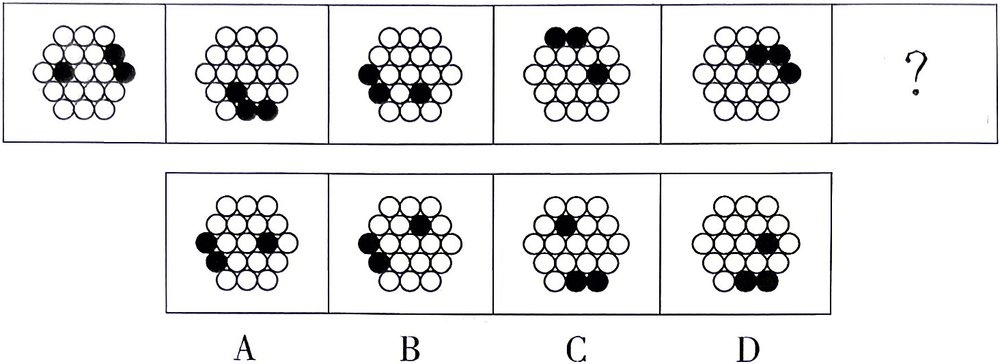
从所给的四个选项中，选择最合适的一个填入问号处，使之呈现一定的规律性：
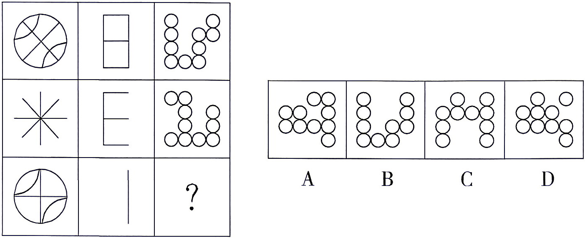
从所给的四个选项中，选择最合适的一个填入问号处，使之呈现一定的规律性：
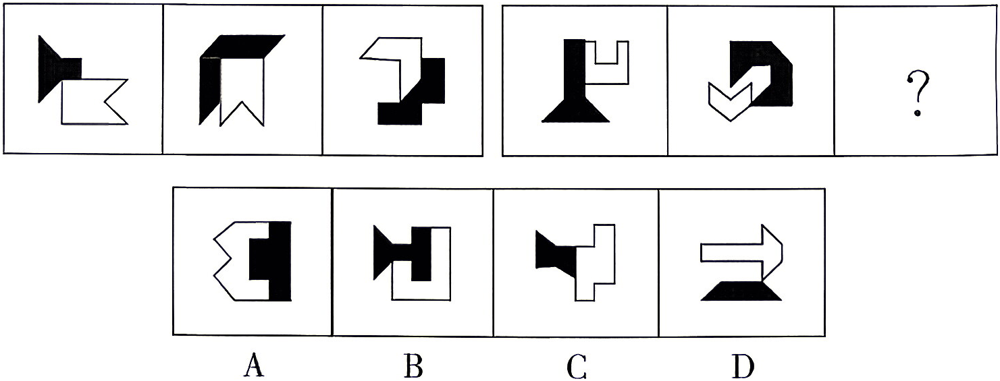
从所给的四个选项中，找出一个和其他三个具有不同规律的图形：
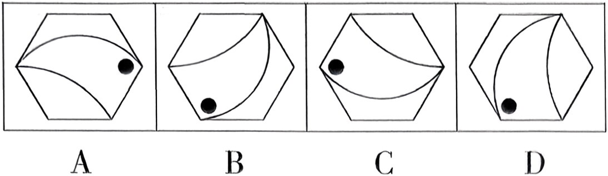
下列给的四个选项中，选择最合适的一个填入问号处，使之呈现一定的规律：
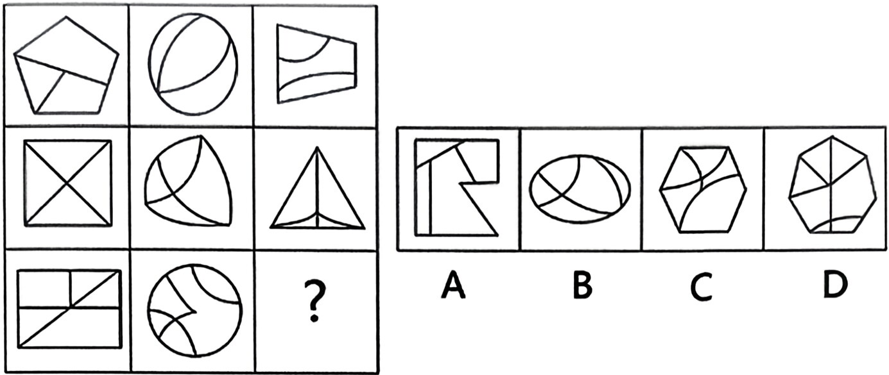
把下面的六个图形分为两类，使每一类图形都有各自的共同特征或规律，分类正确的一项是：
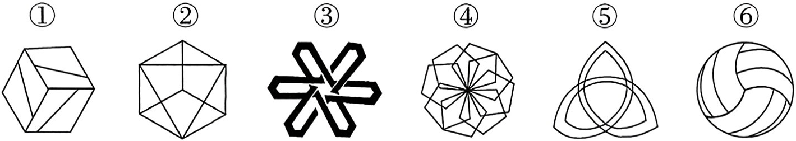
A.①②③，④⑤⑥ B.①③⑥，②④⑤
C.①③④，②⑤⑥ D.①④⑤，②③⑥
把下面的六个图形分为两类，使每一类图形都有各自的共同特征或规律，分类正确的一项是：
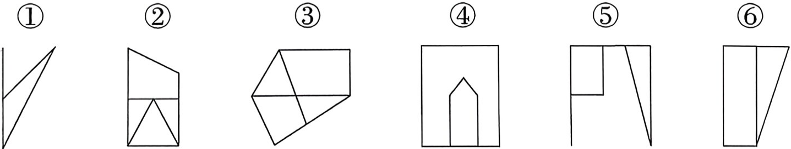
A.①②③，④⑤⑥ B.①②⑤，③④⑥
C.①②⑥，③④⑤ D.①④⑥，②③⑤
把下面的六个图形分为两类，使每一类图形都有各自的共同特征或规律，分类正确的一项是：
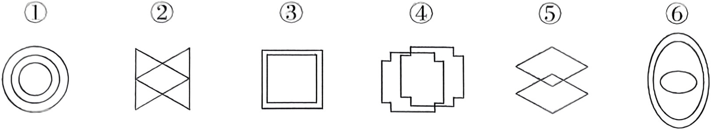
A.①②⑥，③④⑤ B.①③④，②⑤⑥
C.①③⑥，②④⑤ D.①④⑥，②③⑤
下列四个选项中，可以和左图组合成长方体的是：
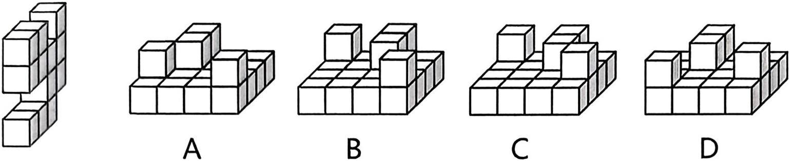
下列四个选项中，能由左边立体图形展开图折叠而成的是：
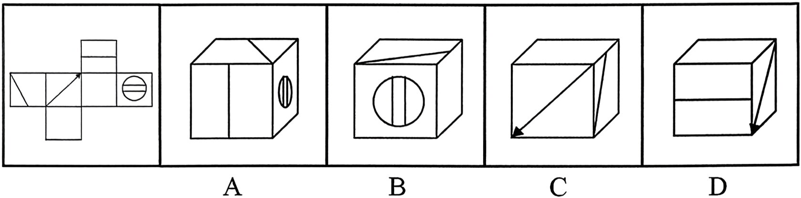
表演型人格又称寻求注意型人格，是一种以过分情感化和夸张的言行吸引他人注意的人格。具有表演型人格的人易感情用事，自我中心，情绪多变，以致难以与周围人保持正常的社会关系。
根据上述定义，下列与表演型人格无关的是：
A.小邓喜欢穿奇装异服，希望吸引别人的注意
B.小王具有表演才能，讲话时手舞足蹈、表情丰富
C.小刘在人际交往受挫折时，表现出歇斯底里行为
D.小顾没有几个知心朋友，但他经常说自己有很多知心朋友
聚类抽样是将总体中各单位归并成若干个互不交叉、互不重复的集合，称之为群，然后以群为抽样单位进行整体抽样的一种抽样方式。
根据上述定义，下列属于聚类抽样的是：
A.将 400 个企业按产业分为 3 种，从每种产业中随机抽取 10 个企业进行统计
B.学校开展作业质量检查，李老师随机抽取班上几位学生的作业进行检查
C.某工厂将全体工人按车间进行分组，从所有车间中抽两个车间进行体检
D.主持人随机从观众席中挑选出 3 名男性和 3 名女性上台参与游戏
基础概率忽略是人们在进行主观概率判断时倾向于使用当下的具体信息而忽略掉一般常识的现象。具体来讲就是当人们拥有具体信息时，倾向于根据具体信息来进行主观判断。而把基础概率抛之脑后，从而导致判断结果出现谬误。
根据上述定义，下列最不符合基础概率忽略现象的是：
A.小刘购买手机的时候，店员向他强力推荐两种机型，于是他纠结于该选择哪一种，忽略了自己原来想购买的机型
B.小黄在找工作时，了解到学姐学长平均年收入超过 30 万元，于是忽略了应届大学生的起薪仅有每月几千元的现状，认为自己也可以找到这样的工作
C.小王看到了很多飞机失事的报道，于是忽略了飞机出事的概率为百万分之一，认为与其它交通工具相比，坐飞机最不安全
D.小张在双十一时看到想要购买的电视降价 30%，于是忽略这款电视日常售价其实更低，迫不及待地下单购买了
自然游戏群体是指非成人组织或参加的，由在同一游戏空间范围内活动的数个孩子，从共同的兴趣和愿望出发，自发聚集起来形成的游戏群体。
根据上述定义，下列属于自然游戏群体的是：
A.相约周末一起玩网游的数名同学
B.居民住宅区空地上成群游戏的孩子
C.在操场上参加学校足球比赛的小球员们
D.假日在公园里野餐露营的一家人
扩散现象是指物质分子从高浓度区域向低浓度区域转移的现象，是由于分子热运动而产生的质量迁移现象，主要是由于密度差引起的。
根据上述定义，下列选项不涉及扩散现象的是：
A.花气袭人知骤暖
B.临池学书，池水尽黑
C.遥知不是雪，为有暗香来
D.居高声自远，非是藉秋风
变色龙效应，又称“无意识模仿”，是指人们在社会交流时会相互无意识地模仿对方的一些动作、表情和行为方式，其在个体社会认知以及人际交流上扮演着重要的角色。
根据上述定义，下列属于变色龙效应的是：
A.某知名演员在影视作品中饰演两个角色，善于抓住人物特点，能够做到无缝切换
B.林黛玉在观察着贾母等长辈用餐细节的同时，也随时在调整着自己的一言一行
C.生活习惯和行为方式各异的小红和小亮，在结婚几年后，越来越有夫妻相，连行为举止都变的很相似
D.小明在篮球比赛中学着爸爸打球的姿势，像闪电一样绕过一名防守队员，将球准确无误地投进了篮筐
求医行为，是指人们在感到躯体不适或产生病感时寻求医疗帮助的行为。根据求医的决定是由谁做出的，可以分为主动求医、被动求医和强制求医。主动求医是指当个体产生不适感或病感时，自觉做出决定。被动求医指的是由病人的家属或他人做出求医的决定，病人配合就医。强制求医是指本人不愿求医，但因疾病对本人或社会人群健康构成危害而强行要求其就医。
根据上述定义，以下属于被动求医的是：
A.老张的体检报告显示他有轻度脂肪肝，建议可进一步检查和治疗，老张拿到报告后很紧张，赶紧到医院去挂号
B.小张牙疼好几天了，一直没有去医院治疗，直到牙疼引发面部肿胀，连张口吃饭都困难了，才不得不去牙科诊治
C.刘阿姨最近无缘由地开始说自己没有用了，干脆死了更好，她不愿去医院看病，她的丈夫和儿女苦劝无果，只好硬带她去医院就诊
D.中学生小梅放学回家，跟妈妈说今天拉肚子，上了五次厕所，除此之外没有别的不舒服，用不用去医院？妈妈决定带她去医院挂号
“供给侧结构性改革”是指从供给侧入手，针对结构性问题而推进的改革。“供给侧”包含两个基本方面：一是生产要素投入，如劳动投入、资本投入、土地等资源投入、企业家才能投入、政府管理投入；二是全要素生产率提高，由制度变革、结构优化、要素升级决定。“结构性问题”主要包括产业结构问题、消费结构问题、区域结构问题、要素投入结构问题、排放结构问题、增长动力结构问题、收入分配结构问题等。
根据上文，下列不属于供给侧结构性改革范畴的是：
A.某平台把“碎片化”的闲置私家车统合，用于共享
B.某点心店通过升级面点技术把点心做得更精致、更好吃
C.某公司坚持自主创新，开发出自有专利的高科技智能终端产品
D.某酒厂斥巨资投放广告，拿下某热门综艺节目冠名权
社会助长：个体因他人的在场而增强了行为的水平。
社会阻抑：个体因他人的在场而降低了行为的水平。
从众：个体在群体的压力下，不由自主地遵从群体中多数人的思想和行为的过程。
典型例证：
（1）小王一个人工作的时候做得又慢又差，但在给他人演示时，却表现得比较好。
（2）小郑很沮丧，上台前为本次发言做了充分准备，上台后面对观众却说不出话来。
（3）小李力排众议，做了一个后来被证明为正确的决定。
上述典型例证与定义存在对应关系的数目有：
A.0 个 B.1 个 C.2 个 D.3 个
加害给付是指在履行合同的过程中，合同关系中的债务人所作出的履行行为不符合合同的规定，并且这种不适当履行行为造成了对债权人的履行利益以外的损害，这一损害包括人身损害或给付标的的以外的其他财产损害。
根据上述定义，下列没有反映加害给付的是：
A.甲公司与乙宾馆协议，约定在该宾馆举办答谢酒宴，结果在酒席中部分客人食用海鲜后出现了食物中毒的情况
B.甲与乙一直有合作协议，2018 年年初，甲将患有传染病的家禽卖给农场主乙，致使乙农场的其他家禽染病死亡
C.甲电子商城与供货商乙签订采购协议，乙将有问题的充电宝供货给甲，一名消费者购买了甲商场的充电宝，使用时发生爆炸，一只手受伤
D.甲水果店欲采购水果，于是与乙供货商签订合同，后发现乙送来的水果中部分已经腐烂，无法销售
妨碍：妨害
A.违反：违规 B.批评：评价
C.显著：明显 D.提醒：警示
扬声器：喇叭
A.斑鸠：鹁鸪 B.半子：义子
C.桂圆：金桂 D.朋友：同事
画饼：充饥
A.水涨：船高 B.杀彘：教子
C.掘地：寻天 D.安家：立业
质询：答复
A.施工：竣工 B.指导：交流
C.生产：消费 D.继承：发展
客船：座椅：乘客
A.景区：景点：风景
B.医院：病床：病人
C.办公室：办公桌：椅子
D.体育馆：运动员：乒乓球
网络媒体：纸质媒体：媒体
A.随机误差：系统误差：误差
B.纪实文学：网络文学：文学
C.区域经济：市场经济：经济
D.社会新闻：负面新闻：新闻
金文：隶书：楷书
A.龟甲：竹简：宣纸
B.钢琴：马头琴：古琴
C.官话：文言文：白话
D.毛笔：签字笔：钢笔
神经元：医学：科学家
A.光速：物理学：院士
B.食物：烹饪：厨师
C.解剖：美学：艺术家
D.水稻：农民：专家
吹风机 之于 （ ） 相当于 （ ） 之于 主板
A.接线板；智能锁 B.电饭锅；手机
C.电热丝；电视机 D.发热；散热器
时间 之于 （ ） 相当于 （ ） 之于 密度
A.数量；质量 B.流水；磐石
C.速度；体积 D.日晷；天平
曾几何时，“免费服务”是互联网的重要特征之一。如今这一情况正在发生改变。有些人在网上开辟知识付费平台，让寻求知识、学习知识的读者为阅读“买单”，这改变了人们通过互联网免费阅读的习惯。近年来，互联网知识付费市场的规模正以连年翻番的速度增长。但是有专家指出，知识付费市场的发展不可能长久，因为人们大多不愿为网络阅读付费。
以下哪项如果为真，最能质疑上述专家的观点？
A.高强度的生活节奏使人无法长时间、系统性阅读纸质文本，见缝插针、随时呈现式的碎片化、网络化阅读已成为获取知识的常态
B.当前，许多图书资料在互联网上均能免费获得，只要合理用于自身的学习和研究，一般不会产生知识产权问题
C.日益增长的竞争压力促使当代人不断学习新知识，只要知识付费平台做得足够好，他们就愿意为此付费
D.当前网上知识付费平台竞争激烈，尽管内容丰富，形式多样，但是鱼龙混杂，缺少规范，一些年轻人沉溺其中难以自拔
某处室共有李、王、陈、宋、文 5 人，办公室就该处室是否购买打印机和投影仪征询 5 人意见。5 人表示如下：
李：不管买不买打印机，都要买投影仪；
王：两样都买；
陈：两样至少买一样；
宋：不买投影仪，或者买打印机；
文：两样至多买一样。
办公室经过综合考虑，最终完成了采购工作。
根据以上信息，可知办公室最终的采购不可能：
A.与其中 4 人的意见不冲突
B.与其中 3 人的意见不冲突
C.与其中 2 人的意见不冲突
D.与其中 1 人的意见不冲突
“你能不能麻利点？整天磨磨蹭蹭的！”“这道题我都讲几遍了，怎么还不会，你在学校是不是也不认真听讲？”……很多家长教育孩子时，觉得只要吼一下，孩子就会听话。这种方式虽然立竿见影，但只是短时效应。随着孩子年龄增长，这种方法不仅会慢慢失效，还可能引起孩子的反抗，或者给孩子带来一些长期的不良影响，比如墨守成规、逆来顺受、不能独立等。有专家指出，被吼大的孩子往往会存在性格缺陷。
下列哪项如果为真，最能支持上述专家的观点？
A.教育过程中，家长要及时观察孩子的情绪变化，与孩子进行正确沟通
B.家长是创造家庭氛围的主体，缺乏自我觉察及情绪调整的能力会破坏家庭的和谐
C.习惯了家长粗暴的教育方式，孩子会变得磨蹭，容易与家长发生言语冲突或者封闭自己的内心
D.家长对孩子的行为存在潜移默化的影响，家长情绪不稳定，孩子会产生习得性的情绪化表达方式
进入移动互联网时代，扫码点餐、在线挂号、网购车票、电子支付等智能化生活方式日益普及，人们的生活越来越便捷。然而，也有很多老年人因为不会使用智能手机等设备，无法进入菜场、超市和公园，也无法上网娱乐与购物，甚至在新冠疫情期间因无法从手机中调出健康码而被拒绝乘坐公共交通。对此，某专家指出，社会正在飞速发展，不可能“慢”下来等老年人，老年人应该加强学习，跟上时代发展。
以下哪项如果为真，最能质疑该专家的观点？
A.老年人也享有获得公共服务的权利，为他们保留老办法，提供传统服务，既是一种社会保障，更是一种社会公德
B.有些老年人学习能力较强，能够熟练使用多种电子产品，充分感受移动互联网时代的美好
C.目前中国有 2 亿多老年人，超 4 成的老年人存在智能手机使用障碍，仅会使用手机打电话
D.社会管理和服务不应只有一种模式，而应更加人性化和多样化，有些合理的生活方式理应得到尊重
美国马萨诸塞州的防疫部门最近发表了一份检测报告，在该州境内接受检疫的野生白尾鹿里面，有 70%感染上了某种病毒。据研究，该病毒最初是从人传播到鹿身上的，随后发生变异，可在鹿群中间传播。目前防疫部门只对和人类有过接触的白尾鹿进行检疫。防疫部门的专家由此推测，州内的野生白尾鹿中感染了此种病毒的比例将显著地小于 70%。
下列各项如果为真，哪项最能够支持上述论点？
A.在马萨诸塞州境内，感染了这种病毒的人只占全部人数的 0.2%
B.马萨诸塞州内与人有接触的野生白尾鹿，只占其总数的 20%
C.感染此种病毒的白尾鹿远比健康的白尾鹿表现得更愿意与人类接触
D.在附近的几个州并未出现大量关于白尾鹿感染病毒的报告
某单位购买了一批影像资料，有科幻片、故事片、战争片等；有国内的、欧美的、印度的；有中文的，也有英文原版的。其中，所有的科幻片都不是英文原版的，所有的故事片都是英文原版的，所有的故事片都是印度的。战争片既有印度的，也有欧美的；既有中文的，也有英文原版的。
根据以上陈述，关于这批影像资料可以得出：
A.有些印度片不是科幻片
B.有些战争片也是故事片
C.有些科幻片不是欧美的
D.有些故事片是中文的
研究人员将 200 只出生 15 天、身体素质相当的小鼠分为两组进行饲养。实验组和对照组唯一不同的是：实验组每天分 3 次给它们播放各 20 分钟的人类各种田径运动赛的视频，而对照组每天分 3 次给它们播放各 20 分钟的田园风光的视频。15 天之后，发现实验组小鼠的体重比对照组平均轻 10%。研究人员由此推断，看田径运动赛的视频，可以帮助小鼠减肥。
以下哪项如果为真，最能支持该研究人员的上述推断？
A.美好的田园风光使得对照组的小鼠心情愉悦，体重增加
B.实验中，两组小鼠都能充分观看视频，并逐渐对视频内容产生兴趣
C.统计发现，受视频影响，实验组的小鼠每天的运动量明显高于对照组
D.田径运动赛的视频中，有部分拉拉队员的尖叫声使得一些小鼠受到惊吓
护士一行，可说是典型的“女性主导型职业”，但是近些年来情况有所改观。随着现代医学理论和技术手段的进化，某些诊疗过程变得越发复杂和漫长，可谓耗时耗力，这就让男护士的体力优势变得更有价值。因此有人推测，将来女护士终将会被男护士所取代。
以下哪项如果为真，最能质疑上述观点？
A.某些大手术时长动辄十多小时，许多女护士扛不住
B.随着医学诊疗进步带来的工作量剧增，男护士的作用还将继续放大
C.费力气的工作，将来很可能会被智能机械替代
D.护士需要爱心、细心和耐心，这是女性的天然优势
一项研究报告表明，随着经济的发展和改革开放，我国与种植、养殖有关的单位几乎都有从外国引进物种的项目。不过，我国华东等地作为饲料引进的空心莲子草，沿海省区为护滩引进的大米草等，很快蔓延疯长，侵入草场、林区和荒地，形成单种优势群落，导致原有植物群落的衰退。新疆引进的意大利黑蜂迅速扩散到野外，使原有的优良蜂种伊犁黑蜂几乎灭绝。
根据以上信息，可得出以下哪项？
A.引进国外物种可能会对我国的生物多样性造成巨大危害
B.应该设法控制空心莲子草、大米草等植物的蔓延
C.从国外引进物种是为了提高经济效益
D.我国 34 个省、市、自治区都有外来物种
目前认为白垩纪末期（约 6600 万年前）包括恐龙在内的大量生物灭绝的原因是，一颗直径约 10 千米的巨大陨石撞击了地球。1991 年，陨石撞击的重要证据——陨石坑在墨西哥尤卡坦半岛附近被发现。有学者提出假说如下：陨石撞击地球后，岩石等产生的尘埃造成植物无法进行光合作用，气候变得寒冷，恐龙等生物无法适应这种环境变化，从而灭绝。
以下说法最能有力驳斥上述恐龙灭绝原因的是：
A.陨石撞击产生的岩石尘埃粒径约为 0.1 毫米，停留在大气中最多也就 1 周，阳光仅被阻挡 1 周的环境变化不至于引起生物灭绝
B.在加拿大西部艾伯塔省的一个地区，发现大约 8000 万年前生活于此的恐龙有 45 种，但就在陨石撞击之前不久，种类已减少到只有 6 种
C.白垩纪末期的印度地区发生了大规模火山运动，在全球范围内带来了巨大的环境变化
D.目前尚不确定 6600 万年前在地球上撞出巨大陨石坑的是哪一颗小行星，因此也不清楚造成恐龙灭绝的始作俑者
图 1 2014 年-2019 年 1-4 月我国美容化妆品及护肤品进出口额及同比增长率（保留卷面原图）
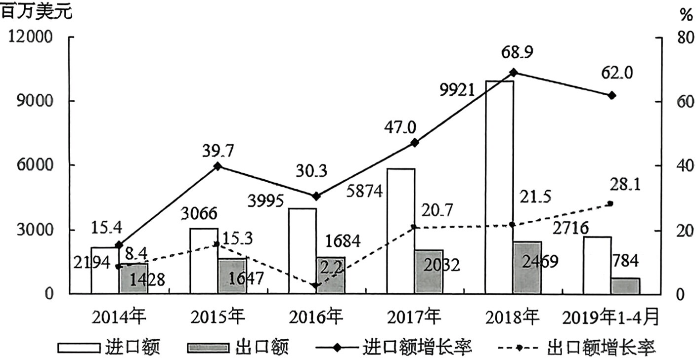
图 2 2014 年-2019 年 1-4 月我国美容化妆品及护肤品进出口量及同比增长率（保留卷面原图）
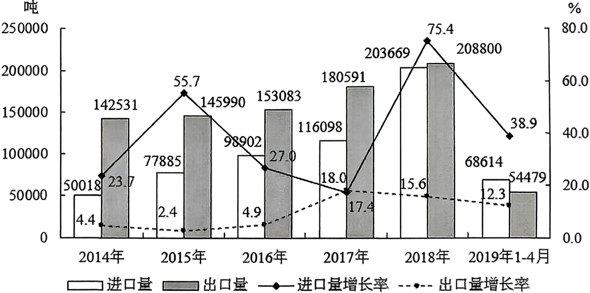
相对比 2013 年，2016 年我国美容化妆品及护肤品出口量的增长率约为多少？
A.7.4% B.12.1% C.15.1% D.17.6%
2018 年，我国美容化妆品及护肤品进出口总额同比增长率约：
A.45.1% B.50.2% C.56.7% D.59.4%
2018 年 1-4 月，我国美容化妆品及护肤品进口额是出口额的几倍？
A.2.7 B.3.1 C.3.5 D.3.9
关于我国美容化妆品及护肤品各指标，以下增长率最大的是：
A.2018 年进口单价增长率 B.2019 年 1-4 月出口单价增长率
C.2017 年进出口总量同比增长率 D.2016 年贸易额逆差同比增长率
能够从上述资料中推出的是：
A.2019 年 1-4 月我国美容化妆品及护肤品进口额同比增速高于出口额
B.2014-2018 年，我国美容化妆品及护肤品进、出口额同比增长速度的差距持续扩大
C.2018 年我国美容化妆品及护肤品进出口总量未超过 2014 年的 2 倍
D.2014-2018 年，我国美容化妆品及护肤品出口额年均增长率超过同期进口额
表 2017 年部分城市书店数量排行榜（数值据原图逐格核对）
| 城市 | 书店数量（家） | GDP（亿元） | 常住人口（万人） | 人均可支配收入（元） |
|---|---|---|---|---|
| 北京 | 6719 | 28000 | 2170.7 | 57230 |
| 成都 | 3463 | 13889 | 1604.5 | 29908 |
| 重庆 | 2473 | 19500 | 3075.2 | 24153 |
| 广州 | 2441 | 21503 | 1449.8 | 55400 |
| 上海 | 2379 | 30134 | 2418.3 | 58988 |
| 杭州 | 1898 | 12556 | 946.8 | 49832 |
| 大连 | 1509 | 7363 | 698.7 | 40587 |
| 南通 | 1504 | 7735 | 730.5 | 33011 |
| 苏州 | 1221 | 17000 | 1068.4 | 50350 |
| 武汉 | 1081 | 13410 | 1089.3 | 38642 |
| 郑州 | 1015 | 9130 | 988.1 | 30556 |
| 宁波 | 1003 | 9847 | 800.5 | 48233 |
| 深圳 | 945 | 22438 | 1252.8 | 52938 |
| 西安 | 827 | 7470 | 953.4 | 32597 |
| 合肥 | 680 | 7213 | 796.5 | 31950 |
| 南京 | 339 | 11715 | 833.5 | 48104 |
表格所列城市中 GDP 最高的城市，以常住人口计算，2017 年居民可支配收入总额约为多少亿元？
A.1.43 B.14300 C.1.24 D.12400
若以人均可支配收入与城市书店数量的比值来衡量城市书店投资潜力，则 2017 年以下城市中最具投资潜力的是：
A.北京 B.广州 C.杭州 D.上海
若人口数按常住人口计算，表格所列城市中，2017 年直辖市人均 GDP 约多少万元？
A.10 B.12
C.14 D.16
表中所列城市中，2017 年书店数量排名前五的城市中，北京和上海常住人口合计占比约为：
A.49.3% B.45.5%
C.42.8% D.38.8%
关于表格所列城市，下列表述正确的是：
A.2017 年，若人口数按常住人口计算，则北京的人均 GDP 最高
B.2017 年，书店数量和人均可支配收入均在前五的城市有 2 个
C.2017 年，若人口数按常住人口计算，则成都每万人拥有书店数量与宁波几乎相同
D.2017 年常住人口第二多的城市，其人均可支配收入不到常住人口最少的城市的 1.5 倍
2018 年，全国平均年降水量 682.5 毫米，同比增长 2.7%。全国水资源总量为 27462.5 亿立方米，同比减少 4.5%。其中，地表水资源量 26323.3 亿立方米，同比减少 5.1%。
2018 年，根据全国 669 座大型水库和 3602 座中型水库的数据统计，水库年末蓄水总量 4104.3 亿立方米，比年初蓄水总量减少 38.0 亿立方米。其中，大型水库年末蓄水量为 3648.2 亿立方米，比年初减少 47.3 亿立方米。
2018 年，全国供水总量占当年水资源总量的 21.9%。其中，地表水源供水量占供水总量的 82.3%；地下水源供水量占供水总量的 16.2%；其他水源供水量占供水总量的 1.5%。与 2017 年相比，供水总量减少 27.9 亿立方米。其中，地表水源供水量增加 7.2 亿立方米，地下水源供水量减少 40.3 亿立方米，其他水源供水量增加 5.2 亿立方米。
2018 年年末，全国平均每座中型水库蓄水约多少万立方米？
A.1266 B.5453 C.6818 D.12662
2018 年，全国地下水源供水量约为多少亿立方米？
A.4950 B.4449 C.974 D.934
2018 年，全国中型水库年末蓄水量比年初蓄水量：
A.减少 2.1% B.增加 2.1%
C.减少 1.9% D.增加 1.9%
2018 年，全国地表水源供水量约比地下水源供水量多多少倍？
A.6.1 B.5.1 C.4.1 D.3.1
不能从上述材料推出的是：
A.2018 年，全国地表水资源量占全国水资源总量的九成以上
B.2018 年，全国其他水源供水量约占当年水资源总量的 3.3%
C.若保持 2018 年的同比增速不变，则 2020 年，全国平均年降水量将超过 700 毫米
D.2018 年，全国地表水源供水量占供水总量的比重高于上年同期
表 1 2016 年某市本级财政预算收入及增收状况（数值据原图逐格核对）
| 收入项目 | 收入金额(亿元) | 预算完成率(%) | 同比增收(亿元) |
|---|---|---|---|
| 财政预算总收入 | 109.16 | 99.2 | 30.15 |
| 其中:一般预算收入 | 26.26 | 102.2 | 7.13 |
| 上划中央收入 | 47.57 | 100.8 | 16.02 |
| 基金收入 | 35.33 | 95.1 | ？ |
注预算完成率=收入金额÷预算收入金额
2016 年该市本级完成财政一般预算支出 49.86 亿元，比上年增支 16.79 亿元，增长 50.8%。
表 2 2016 年该市本级主要预算支出项目完成情况（数值据原图逐格核对）
| 支出项目 | 支出金额(亿元) | 同比增速(%) |
|---|---|---|
| 一般公共服务 | 6.37 | 31.0 |
| 公共安全 | 4.77 | 37.3 |
| 教育 | 6.03 | 51.7 |
| 科学技术 | 1.11 | 181.0 |
| 文化体育与传媒 | 1.29 | 35.8 |
| 社会保障和就业 | 2.63 | 26.7 |
| 医疗卫生 | 2.28 | 14.4 |
| 节能环保 | 6.68 | 567.0 |
| 城乡社区事务 | 2.57 | 48.7 |
| 农林水事务 | 4.02 | 34.5 |
| 交通运输 | 2.58 | 10.8 |
| 资源勘探电力信息等事务 | 4.70 | 67.8 |
表 1 中“？”处的数字应为：
A.7 B.7.5 C.8.5 D.9
2016 年该市上划中央收入同比约增长了：
A.37% B.44% C.51% D.58%
2016 年该市本级主要预算支出项目中，占总预算支出比重较上年有所提高的项目个数有：
A.7 个 B.6 个 C.5 个 D.4 个
2016 年该市教育支出同比增量约是医疗卫生的多少倍？
A.4 B.7 C.10 D.14
关于该市 2016 年财政收支状况，能够从上述资料中推出的是：
A.财政总收入金额比预算总收入低 1 亿多元
B.基金收入预算额超过 40 亿元
C.节能环保支出同比增长了 5 亿多元
D.支出增速最低的项目是科学技术